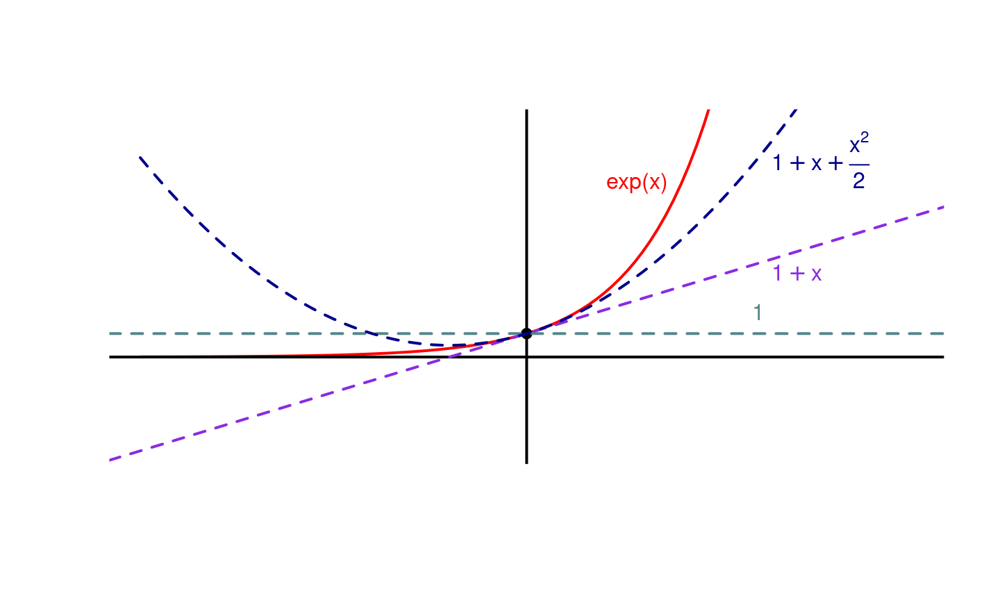
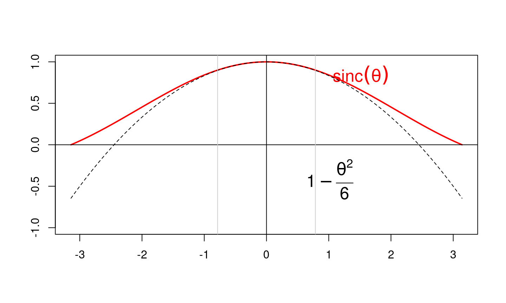

4 novembre 2019
Introduction
Plan du cours
- Domaine d’étude
- Limites, continuité, dérivabilité et variations
- Comparaison locale de fonction
- Etude locale des fonctions
- Retour sur la limite
Développement Limités
Le but des développements limités est de faire des
On va formaliser cette intuition avec la notion de
Négligeabilité
Définition
On dit que \(f\) est
Notation de Landau
Si \(f\) est négligeable devant \(g\) en \(a\), on note
- \(f = o_a(g)\) en omettant \(a\) si le voisinage est clair. On dit qu’au voisinage de \(a\), \(f\) est un \(o(g)\) (prononcé “petit o de g”)
- Par un abus de notation, on utilise la même notation pour des expressions: \(x^2 = o(x)\) au voisinage de \(0\).
- On écrit enfin \(f = g + o(h)\) pour dire \(f - g = o(h)\).
Les cas particuliers suivants sont à
- Si \(a \in \mathbb{R}\) et \(n < m\) alors \((x - a)^n = o_{\pm \infty} ( (x-a)^m )\) et \((x - a)^m = o_{0} ( (x-a)^n )\)
- Si \(\lim_a g = \pm \infty\) et \(f\) est bornée au voisinage de \(a\) (par exemple \(\lim_a f\) finie), alors \(f = o(g)\)
- Si \(f = o_a(1)\), alors \(\lim_a f = 0\).
Propriétés des \(o\)
- Si \(f = o(g)\) et \(g = o(h)\), alors \(f = o(h)\)
- Si \(f_1 = o(g)\) et \(f_2 = o(g)\), alors \(f_1 + f_2 = o(g)\)
- Si \(f = o(g)\), alors \(f \times h = o(g \times h)\)
- Si \(\lambda \in \mathbb{R}^*\), alors \(f = o(g) \Leftrightarrow f = o(\lambda g)\)
- Si \(f = o_a(1)\), alors \(\lim_a f = 0\).
- Si \(f_1 = o(g_1)\) et \(f_2 = o(g_2)\), alors \(f_1 \times f_2 = o(g_1 \times g_2)\)
Exercices
Montrer que
- \(\forall \alpha \in \mathbb{R}_+ \quad x^\alpha = o_{+\infty}(e^x)\)
- \(\forall \alpha \in \mathbb{R}_+ \quad e^x = o_{-\infty}(x^{-\alpha})\)
- \(\forall \alpha \in \mathbb{R}_+ \quad \ln(x) = o_{+\infty}(x^\alpha)\)
- \(\forall \alpha \in \mathbb{R}_+ \quad x^{-\alpha} = o_{+\infty}(\ln(x))\)
Approximation et somme
Une bonne règle heuristique à retenir pour s’assurer que le résultat approché est peu différent du résultat exact dans une somme est la suivante:
- Pour faire une approximation, on néglige un terme devant les autres
à l’intérieur d’une somme
Exemple (I)
Considérons la distance \(l' = \frac{lf}{l + f}\) qui apparaît régulièrement en optique. On souhaite connaître la distance \(l'\) quand la distance \(l\) est grande devant la focale \(f\) (\(l \gg f\)).
- Si on néglige \(f\) naivement en le posant égal à \(0\), on obtient \(l' = 0\) qui est absurde
- En revanche, si on néglige \(f\) devant \(l\) dans la somme \(f+l\), on commet une faible erreur puisque \(l + f \simeq l\)
- On peut donc poursuivre le calcul avec l’approximation \(l' \simeq \frac{lf}{l + f} \simeq f\).
Exemple (II)
De la même façon, si \(f(x)\) fait intervenir des sommes, on peut utiliser les mêmes arguments pour svoir comment \(x\) se comporte pour des grandes et des petites valeurs de \(x\). Par exemple pour \(f(x) = \frac{x}{1 + x^2}\):
- si \(x \gg 1\), alors \(x^2 + 1 \simeq x^2\) et \(f(x) \simeq \frac{x}{x^2} = 1/x\)
- si \(x \ll 1\), alors \(x^2 + 1 \simeq 1\) et \(f(x) \simeq x\)
Faire une approximation est
Exemple (III)
En notations de Landau, on a
- \(f(x) = x(1 + o(1)) = x + o(x)\) au voisinage de \(0\)
- \(\displaystyle f(x) = \frac{1}{x}(1 + o(1)) = \frac{1}{x} + o\left(\frac{1}{x}\right)\) au voisinage de \(+\infty\)
C’est très utile mais on peut avoir d’aller plus loin et de connaître le comportement de \(f(x) - x\) au voisinage de \(0\). On sait juste \(f(x) - x = o(x)\) mais on ne connaît pas son ordre de grandeur: \(x^2\)? \(x^3\)? Autre chose?
De même si on ne manipule pas directement des sommes mais des fonctions différentes (par exemple \(\cos(x)\), \(\sin(x)\)), peut-on faire le même genre d’approximation?
C’est justement l’intérêt des développements limités.
Exercice
Donner des approximations des quantités suivantes: \[ \begin{align} \frac{1}{1+A} & & A \ll 1 & & A \gg 1 \\ \frac{3+B+2B^2}{2+3B+B^2} & & B \ll 1 & & B \gg 1 \\ \frac{a+b}{ab} & & a \ll b & & a \gg b \\ \frac{x^2 + y^2 + 2xy}{3x - y} & & x \ll y & & x \gg y \\ \sqrt{u^2 + v^2} & & u \ll v & & u \gg v \\ e^{\sqrt{w} - 1} & & w \ll 1 & & w \gg 1 \\ \end{align} \]
Développements Limités
Premier Contact
Soit \(n \in \mathbb{R}\), \(a \in \mathbb{R}\) et \(f\) une fonction définie au voisinage de \(a\)
Attention, on ne développe pas les \((x - a)^k\) (puisqu’on regarde des termes correctifs quand on s’éloigne de \(a\)).
De façon générale, en posant \(h = (x - a)\), on se ramènera
Le terme \(o( (x-a)^n )\) est appelé reste ou terme complémentaire, le terme \(b_0 + \dots + b_n (x-a)^n\) est appelé terme polynômial.
Formule de Taylor
Le théorème suivant permet de construire explicitement \(b_0, b_1, \dots, b_n\)
Soit \(n \in \mathbb{R}\), \(a \in \mathbb{R}\) et \(f\) une fonction définie au voisinage de \(a\)
Autrement si \(f\) est \(n\) fois dérivable, on sait choisir \(b_0, \dots, b_n\) sans (trop d’) efforts
Intuition
Dans le développement de Taylor, les termes sont triés du plus important au moins important. En effet, au voisinage de \(a\) \[ 1 \gg (x - a) \gg (x - a)^2 \gg \dots \gg (x- a)^n \gg o((x-a)^n) \] Le DL permet donc d’obtenir des approximations successives, dites d’ordre \(0, 1, \dots, n\) de \(f\) (au voisinage de \(a\)) en ne gardant que les termes les plus à gauche: \[ \scriptsize \begin{align} \text{Ordre } 0 \quad & f(x) \simeq f(a) \\ \text{Ordre } 1 \quad & f(x) \simeq f(a) + f'(a) (x - a) \\ \text{Ordre } 2 \quad & f(x) \simeq f(a) + f'(a) (x - a) + \frac{f^{(2)}(a)}{2!}(x - a)^2 \\ \vdots \\ \text{Ordre } n \quad & f(x) \simeq f(a) + f'(a) (x - a) + \frac{f^{(2)}(a)}{2!}(x - a)^2 + \dots + \frac{f^{(n)}(a)}{n!}(x - a)^n \\ \end{align} \]
Intuition (II)
Certaines des approximations précédentes sont bien connues:
- l’approximation d’ordre \(0\) est la limite
- l’approximation d’ordre \(1\) est la tangente
- Plus généralement, l’approximation d’ordre \(n\) est un polynôme de degré \(n\)
Intuition (III)

Lien avec l’approximation
DLs et différentielle
Quand on utilise les DLs dans des contextes concrets, l’absence de notations \(f\) et \(x\) peut entrainer des erreurs. On va donc revenir aux notions de différentielles pour l’expliciter.
On considère deux quantités \(a\) et \(b\) reliées entre elles par une certaine relation \(b\) et on cherche une approximation de \(b(a)\) au voisinage d’une valeur de référence \(a_0\). Si \(b\) est continue, on sait que \(b(a)\) sera proche de \(b(a_0)\) mais on voudrait être plus précis.
On définit les petits écarts \(\Delta b = b(a) - b(a_0)\) et \(\Delta a = a - a_0\). On sait que \(\Delta b \to 0\) quand \(\Delta a \to 0\) mais on cherche un lien plus précis entre \(\Delta b\) et \(\Delta a\).
Illustration graphique
Lien avec la dérivée
On a vu avec les différentielles que pour des variations infinitésimales, on a \[
\text{d}b = \alpha \text{d}a \quad \text{ avec } \alpha = \frac{\text{d}b}{\text{d}a}
\] Si on considère des variations
Lien avec les dérivées successives
Si on n’est pas satisfait de l’approximation précédente, on peut rajouter des termes correctifs proportionnels à \(\Delta a^2, \Delta a^3, \dots\):
\[ \Delta b \simeq \alpha \Delta a + \beta \Delta a^2 + \gamma \Delta a^3 + \dots \]
Compte tenus des définitions de \(\Delta b = b(a) - b(a_0)\) et \(\Delta a = a - a_0\), cela revient à approcher la relation \(b(a)\) par un polynôme \(b^{DL}\) de \(a\) de degré \(n\) (le fameux DL) \[ b^{DL}(a) = b(a_0) + \alpha (a - a_0) + \beta (a - a_0)^2 + \gamma (a - a_0)^3 + \dots \]
Lien avec les dérivées successives (II)
Pour s’assurer que l’approximation \(b^{DL}(a) \simeq b(a)\) est valide au voisinage de \(a_0\), on impose à \(b^{DL}\) et \(b\) d’avoir la même valeur en \(a_0\), mais également la même pente, la même concavité, etc.
En termes formels, \[ \forall k \leq n \quad \frac{\text{d}^k b^{DL}}{\text{d}a^k}(a_0) = \frac{\text{d}^kb}{\text{d}a^k}(a_0) \]
Exercice
Dériver \(b^{DL}(a)\) 3 fois en \(a_0\) et montrer qu’au point de référence \(a_0\) on a
- \(\frac{\text{d} b^{DL}}{\text{d}a}(a_0) = \alpha\)
- \(\frac{\text{d}^2 b^{DL}}{\text{d}a^2}(a_0) = 2 \times \beta\)
- \(\frac{\text{d}^3 b^{DL}}{\text{d}a^3}(a_0) = 3 \times 2 \times \gamma\)
En déduire les valeurs de \(\alpha\), \(\beta\), \(\gamma\)
Lien avec les dérivées successives (III)
On retrouve ainsi en égalisant les dérivées, et avec la notation de Leibniz la formule de Taylor \[
\small
b(a) \simeq b(a_0) + \frac{\text{d}b}{\text{d}a}(a_0)\Delta a + \frac{1}{2!}\frac{\text{d}^2b}{\text{d}a^2}(a_0) \Delta a^2 + \dots + \frac{1}{n!}\frac{\text{d}^n b}{\text{d}a^n}(a_0) \Delta a^n
\] La méthode à suivre pour faire un DL est donc
- exprimer \(b\) en fonction de \(a\) (souvent donné dans l’exercice)
- choisir un point de référence \(a_0\) (idem)
- calculer les premières dérivées de \(b\)
- en déduire les coefficients du DL et conclure
Exemple (I)
Pour faire un DL de \(u = \cos(\theta)\) autour de \(\theta_0 = \pi/3\), on calcule les valeurs successives des dérivées de \(u\) en \(\theta_0\).
- \(u(\theta_0) = \cos(\theta_0) = \frac{1}{2}\)
- \(\frac{\text{d}u}{\text{d}\theta}(\theta_0) = -\sin(\theta_0) = -\frac{\sqrt{3}}{2}\)
- \(\frac{\text{d}^2u}{\text{d}\theta^2}(\theta_0) = -\cos(\theta_0) = -\frac{1}{2}\)
- \(\frac{\text{d}^3u}{\text{d}\theta^3}(\theta_0) = \sin(\theta_0) = \frac{\sqrt{3}}{2}\)
Exemple (II)
D’ou on déduit que si \(\theta\) reste proche de \(\theta_0 = \frac{\pi}{3}\), on a \[ \small \begin{align} u(\theta) = \cos(\theta) & \simeq \frac{1}{2} - \frac{\sqrt{3}}{2}\left(\theta - \frac{\pi}{3}\right) - \frac{1}{2!} \frac{1}{2}\left(\theta - \frac{\pi}{3}\right)^2 + \frac{1}{3!} \frac{\sqrt{3}}{2}\left(\theta - \frac{\pi}{3}\right)^3 \\ & \simeq \frac{1}{2} - \frac{\sqrt{3}}{2}\left(\theta - \frac{\pi}{3}\right) - \frac{1}{4}\left(\theta - \frac{\pi}{3}\right)^2 + \frac{\sqrt{3}}{12}\left(\theta - \frac{\pi}{3}\right)^3 \end{align} \]
Exercice
En appliquant la procédure vue dans l’exemple, calculer un \(DL_3\) des fonctions suivantes
- \(v = \tan(u)\) lorsque \(u\) est proche de \(\frac{\pi}{6}\)
- \(v = \ln(u)\) lorsque \(u\) est proche de \(2\)
- \(A = 1 + t + 2t^2 + 3t^3\) lorsque \(t\) est proche de \(1\). Montrer que dans ce cas-là, le DL est en fait rigoureusement égal à \(A\) mais écrit sous une autre forme
- \(A = 1 + t + 2t^2 + 3t^3\) lorsque \(t\) est proche de \(0\). Commenter le résultat
Exercice - Proposition
Dans la pratique, on se ramène toujours à des DLs en \(0\) et il est bon de connaître les \(DL_3(0)\) des fonctions suivantes (à calculer comme vu dans l’exemple)
\[ \begin{align} \sin(x) & & \cos(x) & & \tan(x) \\ \frac{1}{1+u} & & & & \frac{1}{1 - u} \\ e^u & & & & e^{-u} \\ \sqrt{1+u} & & & & \sqrt{1-u} \\ \ln(1+u) & & & & \ln(1-u) \\ (1+u)^\alpha & & & & (1-u)^{\alpha} \\ \end{align} \]
DLs classiques
Les DLs suivants au voisinage de \(0\) sont à connaître.
\[ \small \begin{align} e^x = & 1 + x + \frac{x^2}{2!} + \dots + \frac{x^n}{n!} + o(x^n) \\ \cos(x) = & 1 - \frac{x^2}{2!} + \frac{x^4}{4!} + \dots + (-1)^n \frac{x^{2n}}{2n!} + o(x^{2n}) \\ \sin(x) = & x - \frac{x^3}{3!} + \frac{x^5}{5!} + \dots + (-1)^n \frac{x^{2n+1}}{(2n+1)!} + o(x^{2n+1}) \\ \frac{1}{1 + x} = & 1 - x + x^2 + \dots + (-1)^n x^n + o(x^n) \\ \ln(1+x) = & x - \frac{x^2}{2} + \frac{x^3}{3} + \dots + (-1)^{n-1}\frac{x^n}{n} + o(x^n) \\ (1+x)^\alpha = & 1 + \alpha x + \frac{\alpha (\alpha - 1)}{2} x^2 + \dots \\ & + \frac{\alpha (\alpha - 1) \dots (\alpha - (n - 1))}{n!} x^n + o(x^n) \\ \end{align} \]
Opérations sur les DLs
Comme pour les limites et les dérivées, on peut aussi utiliser des règles pour combiner les DLs.

Addition, multiplication de DL
Si \(f\) et \(g\) admettent toutes deux un \(DL_n\) en \(0\) et \(\lambda \in \mathbb{R}\), alors
- \(f+g\) admet un \(DL_n\) en \(0\), qui s’obtient en additionnant les parties polynômiales des \(DL_n\) de \(f\) et \(g\) (penser à la linéarité de la dérivée: \((f+g)^{(k)} = f^{(k)} + g^{(k)}\))
- \(f \times g\) admet un \(DL_n\) en \(0\), qui s’obtient en multipliant les parties polynômiales des \(DL_n\) de \(f\) et \(g\) et
en ne gardant que les termes de degrés \(\leq n\) . - \(\lambda f\) admet un \(DL_n\) en \(0\), qui s’obtient en multipliant la partie polynômiale du \(DL_n\) de \(f\) par \(\lambda\).
Exemple
- \(\cos(x) = 1 - \frac{x^2}{2} + o(x^2)\)
- \(e^x = 1 + x + \frac{x^2}{2} + o(x^2)\)
On a donc (les termes en rouges sont des \(o(x^2)\)):
- \(e^x + \cos(x) = 2 + x + o(x^2)\) (terme d’ordre \(2\) du \(DL_2\) nul)
- \[ \small \begin{align} e^x \cos(x) = & \left( 1 + x + \frac{x^2}{2} + o(x^2) \right) \left( 1 - \frac{x^2}{2} + o(x^2) \right) \\ = & 1 - \frac{x^2}{2} + o(x^2) + x \color{red}{- \frac{x^3}{2} + o(x^3)} + \frac{x^2}{2} \color{red}{- \frac{x^4}{4} + o(x^4)} \\ & + o(x^2) + \color{red}{o(x^4) + o(x^4)} \\ = & 1 + x + o(x^2) \end{align} \]
Composition
Soit \(f: A \to B\) et \(g: B \to C\) deux fonctions avec \[
0 \in A, 0 \in B \text{ et } f(0) = 0
\] Si \(f\) et \(g\) admettent toutes deux un \(DL_n\) en \(0\), alors \(g \circ f\) s’obtient en composant les parties polynômiales des \(DL_n\) de \(f\) et \(g\) et
Exemple (I)
Avec \(\sin(x) = x - \frac{x^3}{3!} + o(x^3)\) et \(\frac{x}{1+x} = x - x^2 + x^3 + o(x^3)\), on pose implicitement \(X = \frac{x^2}{1+x}\) (petit quand \(x\) est proche de \(0\)).
\[ \begin{align} \sin\left( \frac{x}{1+x} \right) = & \sin(X) \\ = & X - \frac{X^3}{3!} + o(X^3) \\ \end{align} \]
Exemple (II)
Pour finir le calcul, on développe et on ne garde que les termes de degré au plus \(3\) \[ \begin{align} X = & x - x^2 + x^3 + o(x^3) \\ X^2 = & (x - x^2 + x^3 + o(x^3))^2 = x^2 - 2x^3 + o(x^3) \\ X^3 = & (x - x^2 + x^3 + o(x^3))^3 = x^3 + o(x^3) \\ o(X^3) = & o(x^3) \end{align} \] et donc au final \[ \begin{align} \sin\left( \frac{x}{1+x} \right) = & x - x^2 + x^3 - x^3/6 + o(x^3) \\ = & x - x^2 +\frac{5x^3}{6} + o(x^3) \end{align} \]
Quotient
Comme d’habitude, quotienter par \(f\) revient à multiplier par \(1/f\), on cherche donc un \(DL_n\) de \(1/f\).
Soit \(f\) une fonction admettant le \(DL_n(0)\) suivant: \[ f(x) = b_0 + b_1 x + \dots + b_n x^n + o(x^n) \]
- Si \(b_0 = 0\), alors \(1/f\) n’a pas de DL en \(0\)
- Sinon, \(1/f\) admet un \(DL_n(0)\) obtenu en écrivant: \[ \begin{align} \frac{1}{f(h)} = & \frac{1}{b_0 + b_1 x + \dots + b_n x^n + o(x^n)} \\ = & \frac{1}{b_0} \frac{1}{1 + \frac{b_1}{b_0} x + \dots + \frac{b_n}{b_0} x^n + o(x^n)} \end{align} \] Et il faut donc composer le \(DL_n(0)\) de \(u \mapsto \frac{1}{1 + u}\) avec \(u = \frac{b_1}{b_0} x + \dots + \frac{b_n}{b_0} x^n + o(x^n)\).
Les calculs à faire peuvent être un brin compliqués…
Exemple (I)
On va calculer le \(DL_2(0)\) de \(1/e^{x}\). On sait que \[ e^x = 1 + x + \frac{x^2}{2} + o(x^2) = 1 + u \] avec \(u = x + \frac{x^2}{2} + o(x^2)\). On va donc composer avec le \(DL_2(0)\) de \(\frac{1}{1+u}\), à savoir \[ \frac{1}{1+u} = 1 - u + u^2 + o(u^2) \]
Exemple (II)
On commence par calculer \(u^2\) (et il est clair que \(o(u^2) = o(x^2)\)) \[ \begin{align} u^2 = & (x + \frac{x^2}{2} + o(x^2))^2 = x^2 + o(x^2) \end{align} \] D’où on tire \[ \begin{align} \frac{1}{e^x} = & \frac{1}{1+u} = 1 - u + u^2 + o(u^2) \\ = & 1 - \left(x + \frac{x^2}{2}\right) + x^2 + o(x^2) \\ = & 1 - x + \frac{x^2}{2} + o(x^2) \end{align} \]
Exemple (III)
Dans ce cas précis, on aurait aussi pu remarquer que \(1/e^x = e^{-x}\) et se rappeler que le \(DL_2(0)\) de \(e^{-x}\) est \[ \begin{align} e^{-x} = & 1 + (-x) + \frac{(-x)^2}{2} + o((-x)^2) \\ = & 1 - x + \frac{x^2}{2} + o(x^2) \end{align} \] On retrouve heureusement le même résultat
Exercices
Calculer les \(DL\)s suivants (ceux notés \([*]\) sont difficiles) \[ \small \begin{align} DL_4(0) \; \text{ de } \; \frac{x}{\sin(x)} & & DL_2(0) \; \text{ de } \; \ln(a^x + b^x) \quad [*]\\ DL_4(0) \; \text{ de } \; \frac{1}{\cos(x)} & & DL_4(\pi/2) \; \text{ de } \; \sin(x)^{\sin(x)} \quad [*] \\ DL_2(\pi/4) \; \text{ de } \; \sqrt{\tan(x)} & & DL_1(0) \; \text{ de } \; \sqrt{1 + \sqrt{1 - x}} \\ DL_4(0) \; \text{ de } \; e^{\cos(x)} & & DL_3(0) \; \text{ de } \; x\sqrt{\frac{1+x}{1-x}} \\ DL_3(1) \; \text{ de } \; \frac{\ln(x)}{\sqrt{x}} & & \\ \end{align} \]
Solutions (I)
Calculer les \(DL\)s suivants \[ \small \begin{align} \frac{x}{\sin(x)} & = \frac{1}{1 - [x^2/3! - x^4/5! + o(x^4)]} \\ & = 1 + [x^2/3! - x^4/5!] + [x^2/3! - x^4/5!]^2 + o(x^4) \\ & = 1 + \frac{x^2}{6} + \frac{7x^4}{360} + o(x^4) \\ \ln(a^x + b^x) & = x \ln(a) + \ln(1 + (b/a)^x) \\ & = x \ln(a) + \ln(2) + \frac{1}{2} \left[ (b/a)^x - 1 \right] - \frac{1}{8} \left[ (b/a)^x - 1 \right]^2 \\ & = \ln(2) + \frac{\ln(a) + \ln(b)}{2} x + x^2 \frac{\ln^2(b/a)}{2} - \frac{1}{8} x^2 \ln^2(b/a) + o(x^2) \\ & = \ln(2) + \frac{\ln(a) + \ln(b)}{2} x + \frac{3(\ln(a) - \ln(b))^2}{8} x^2 + o(x^2) \end{align} \]
Solutions (II)
\[ \small \begin{align} \frac{1}{\cos(x)} & = \frac{1}{1 - [x^2/2! - x^4/4! + o(x^4)]} \\ & = 1 + [x^2/2! - x^4/4!] + [x^2/2! - x^4/4!]^2 + o(x^4) \\ & = 1 + \frac{x^2}{2} + \frac{5x^4}{24} + o(x^4) \\ \sin(x)^{\sin(x)} & = \sin(\pi/2 + h)^{\sin(\pi/2 + h)} = \cos(h)^{\cos(h)} \\ & = \exp\left[ (1 - h^2/2 + h^4/24) \ln(1 - h^2/2 + h^4/24) \right] + o(h^4) \\ & = \exp( (1 - h^2/2 + h^4/24) (- h^2/2 + h^4/24 - h^4/8) ) + o(h^4) \\ & = \exp( (1 - h^2/2 + h^4/24) (- h^2/2 - h^4/12) ) + o(h^4) \\ & = \exp( -h^2/2 - h^4/12 + h^4/4 ) + o(h^4) \\ & = \exp( -h^2/2 + h^4/6 ) + o(h^4) \\ & = 1 + (-h^2/2 + h^4/6) + (-h^2/2 + h^4/6)^2/2 + o(h^4) \\ & = 1 - h^2/2 + h^4/6 + h^4/8 = 1 - \frac{h^2}{2} + \frac{7h^4}{24} + o(h^4) \end{align} \]
Solutions (III)
\[ \small \begin{align} \tan(\pi/4 + x) & = \tan(\pi/4) + \tan'(\pi/4)x + \frac{\tan''(\pi/4)}{2}x^2 + o(x^2) \\ & = 1 + 2x + 2x^2 + o(x^2) \\ \sqrt{1+x} & = 1 + \frac{x}{2} - \frac{1}{8}x^2 + o(x^2) \\ \sqrt{\tan(\pi/4 + x)} & = \sqrt{1 + (2x + 2x^2)} + o(x^2) \\ & = 1 + (x + x^2) - \frac{1}{8}(2x + 2x^2)^2 + o(x^2) \\ & = 1 + x + x^2 - \frac{1}{2}x^2 + o(x^2) = 1 + x - \frac{x^2}{2} + o(x^2) \end{align} \]
Solutions (IV)
\[ \small \begin{align} \sqrt{1-x} & = 1 - \frac{x}{2} + o(x) \\ \sqrt{2+h} & = \sqrt{2} + \frac{h}{2\sqrt{2}} + o(h) \\ \sqrt{1 + \sqrt{1 - x}} &= \sqrt{1 + (1 - x/2)} + o(x) \\ & = \sqrt{2 - x/2} + o(x) = \sqrt{2} - \frac{x}{4\sqrt{2}} + o(x) \end{align} \]
Solutions (V)
\[ \small \begin{align} \cos(x) & = 1 - \frac{x^2}{2!} + \frac{x^4}{4!} + o(x^4) \\ e^h &= 1 + h + \frac{h^2}{2} + o(h^2) \\ e^{cos(x)} & = e^{1 - \frac{x^2}{2!} + \frac{x^4}{4!}} + o(x^4) = e \left( e^{- \frac{x^2}{2!} + \frac{x^4}{4!}} \right) + o(x^4) \\ & = e \left( 1 + \left(- \frac{x^2}{2!} + \frac{x^4}{4!} \right) + \left(- \frac{x^2}{2!} + \frac{x^4}{4!} \right)^2/2 \right) + o(x^4) \\ & = e \left( 1 - \frac{x^2}{2!} + \frac{x^4}{4!} + \frac{x^4}{8} \right) + o(x^4) \\ & = e - \frac{e}{2}x^2 + \frac{e}{6}x^4 + o(x^4) \end{align} \] Comme le calcul fait intervenir \(e^{h}\) avec \(h\) d’ordre \(x^2\), il suffit de faire un DL\(_2\) de \(\exp\) en \(h\) pour avoir un DL\(_4\) en \(x\).
Solutions (VI)
\[ \small \begin{align} \sqrt{1+x} & = 1 + x/2 - x/8 + o(x^2) \\ \sqrt{1/ (1-x) } & = (1-x)^{-1/2} \\ & = 1 -\frac{1}{2} (-x) + \frac{3}{8}(-x)^2 + o(x^2) \\ & = 1 +x/2 + 3x^2/8 + o(x^2) \\ \sqrt{\frac{1+x}{1-x}} & = (1 + x/2 - x^2/8)(1 +x/2 + 3x^2/8) + o(x^2) \\ & = 1 + x + o(x^2) \\ x\sqrt{\frac{1+x}{1-x}} & = x + x^2 + o(x^3) \end{align} \] Comme on multiplie par \(x\) à la fin, on se contente d’un DL\(_2\) de \(\sqrt{\frac{1+x}{1-x}}\).
Solutions (VI)
\[ \small \begin{align} \frac{1}{\sqrt{1+x}} & = 1 - \frac{x}{2} + \frac{3}{8}x^2 + o(x^2) \\ \ln(1 + x) & = x - \frac{x^2}{2} + \frac{x^3}{3} + o(x^3) \\ & = x\left( 1 - \frac{x}{2} + \frac{x^2}{3} + o(x^2) \right) \\ \frac{\ln(1+x)}{\sqrt{1+x}} & = x \left[ (1 - \frac{x}{2} + \frac{x^2}{3})( 1 - \frac{x}{2} + \frac{3}{8}x^2 ) + o(x^2) \right] \\ & = x \left[ 1 - x + \frac{23}{24}x^2 + o(x^2) \right] \\ & = x - x^2 + \frac{23}{24}x^3 + o(x^3) \end{align} \] Comme \(\ln(x) = x + o(x)\) et qu’on multiplie, on se contente d’un DL\(_2\) de \(\frac{1}{\sqrt{1+x}}\). On obtiendra bien un DL\(_3\) après multiplication.
Retour sur les DLs d’ordre 1 et 2
DL d’ordre 1 en physique
Physiquement, l’approximation d’ordre \(1\) considère que les variations \(\Delta b\) et \(\Delta a\) sont proportionnelles, et ce dans le même rapport que les différentielles \(\text{d}b\) et \(\text{d}a\).
Du point de vue graphique, cela revient à confondre la courbe de \(b(a)\) avec une droite (en l’occurence sa tangente en \(a_0\)). Les \(DL_1(0)\) sont très utilisés pour remplacer des petits angles \(\theta\), ils permettent d’écrire
- \(\sin(\theta) \simeq \theta\)
- \(\tan(\theta) \simeq \theta\)
qui est une très bonne approximation pour des petits angles (de l’ordre de 0.3490659 radians).
Représentation graphique
DL d’ordre 2 en physique
Si on s’éloigne un peu trop du point de référence \(a_0\) (et pour certaines valeurs de \(a_0\)), l’approximation par une droite n’est pas très satisfaisante et il faut rajouter un terme correctif en \((a - a_0)^2\) pour obtenir une meilleure approximation. Ceci revient à approcher le graphe de \(b(a)\) par une parabole.
Le \(DL_1(0)\) est très utilisé pour remplacer le \(\cos\) de petits angles \(\theta\), il permet d’écrire
- \(\cos(\theta) \simeq 1 - \frac{\theta^2}{2}\)
qui est une très bonne approximation pour des petits angles (jusqu’à 0.7853982 radians).
Représentation graphique
Exercice
En optique ondulatoire, on a souvent affaire à la fonction sinus cardinal définie par \[ \text{sinc}(x) = \frac{\sin(x)}{x} \]
En partant du DL de \(\sin\), trouver directement le \(DL_4(0)\) de \(\text{sinc}(x)\). Pourquoi peut-on définir \(\text{sinc}(0) = 1\) ? Que peut-on dire de la dérivée première du sinus cardinal lorsque x tend 0 ? Et du signe de sa dérivée seconde ?
Représentation graphique

Intérêt en mathématiques
Les DLs permettent de calculer très facilement des limites. En particulier, la règle de l’Hopital est un cas particulier de DLs.
\[ \begin{align} \frac{f(x) - f(x_0)}{g(x) - g(x_0)} & = \frac{f'(x_0)x + o(x)}{g'(x_0)x + o(x)} \\ & = \frac{f'(x_0)+ o(1)}{g'(x_0) + o(1)} \xrightarrow[x \to x_0]{} \frac{f'(x_0)}{g'(x_0)} \end{align} \]
Intérêt en mathématiques (II)
On peut aussi retrouver des limites classiques en \(0\) \[ \begin{align} e^x = 1 + x + o(x) & \Rightarrow \frac{e^x - 1}{x} \xrightarrow[x \to 0]{} 1 \\ \sin(x) = x + o(x) & \Rightarrow \frac{\sin(x)}{x} \xrightarrow[x \to 0]{} 1 \\ \ln(1+x) = x + o(x) & \Rightarrow \frac{\ln(1+x)}{x} \xrightarrow[x \to 0]{} 1 \\ \end{align} \] et d’autres plus neuves \[ \cos(x) = 1- \frac{x^2}{2} + o(x^2) \Rightarrow \frac{1 - \cos(x)}{x^2} \xrightarrow[x \to 0]{} \frac{1}{2} \\ \]
Exercices d’applications (I)
Dans le modèle du gaz parfait avec \(PV = nRT\), on considère une enceinte étanche thermostatée (nombre de moles et température constants). On suppose que le volume de l’enceinte passe de \(V\) à \(V + \Delta V\). La pression évolue en conséquence de \(P\) à \(P + \Delta P\). Relier \(\Delta P\) à \(\Delta V\) en faisant un DL au premier ordre. Comment se compare les variations relatives \(\Delta P/P\) et \(\Delta V / V\).
On considère une sphère de rayon \(R\) et de surface \(S\). On suppose que le rayon de la sphère passe de \(R\) à \(R + \Delta R\). La surface évolue en conséquence de \(S\) à \(S + \Delta S\). Relier \(\Delta S\) à \(\Delta R\) en faisant un DL au premier ordre. Comment se compare les variations relatives \(\Delta S/S\) et \(\Delta R / R\).
Exercices d’applications (II)
- On cherche à évaluer le comportement de la quantité \(f(t) = \frac{1}{\sqrt{t^2+\tau^2}}\) lorsque \(t\) est petit devant \(\tau\). Exprimer \(f(t)\) sour la forme \(C(1+x)^{\alpha}\) où \(x = t/\tau\) est une quantité sans dimension très petite et \(C\) et \(\alpha\) sont des constantes à déterminer. En faisant ensuite un DL à l’ordre 2 de \((1+x)^{\alpha}\), en déduire un DL\(_2\) de \(f(t)\).
Exercices d’applications (III)
En utilisant les DL (et surtout les théorèmes d’opérations) calculer les limites suivantes: \[ \small \begin{align} \lim_{x \to 0} \frac{\cos(x) - 1}{\ln(1+x)\sin(x)} & & \lim_{x \to 0} \frac{\ln(1+\tan(x))}{\sin(x)} \\ \lim_{x \to 0} \frac{\sin(x)\tan(x)}{\sin(x^2)} & & \lim_{x \to 0} \frac{1}{x^2} - \frac{1}{\sin^2(x)} \\ \lim_{x \to 1} \frac{\ln(x)}{x^2 - 1} & & \lim_{x \to 1} \frac{\ln(x)(\tan(\pi x /4) - 1)}{(x - 1)^2} \\ \lim_{x \to +\infty} \left(\frac{2x+1}{2x-1}\right)^{2x} & & \lim_{x \to +\infty} x\left( \left(1+\frac{1}{x}\right)^x - e \right) \end{align} \] Les courageux peuvent aussi essayer de calculer les DL\(_1\) des \(6\) premières fonctions.
Exercices d’applications (III): Réponses
\[ \small \begin{align} \lim_{x \to 0} \frac{\cos(x) - 1}{\ln(1+x)\sin(x)} = -\frac{1}{2} & & \lim_{x \to 0} \frac{\ln(1+\tan(x))}{\sin(x)} = 1 \\ \lim_{x \to 0} \frac{\sin(x)\tan(x)}{\sin(x^2)} = 1 & & \lim_{x \to 0} \frac{1}{x^2} - \frac{1}{\sin^2(x)} = -\frac{1}{3}\\ \lim_{x \to 1} \frac{\ln(x)}{x^2 - 1} = \frac{1}{2} & & \lim_{x \to 1} \frac{\ln(x)(\tan(\pi x /4) - 1)}{(x - 1)^2} = \frac{\pi}{2} \\ \lim_{x \to +\infty} \left(\frac{2x+1}{2x-1}\right)^{2x} = e^2 & & \lim_{x \to +\infty} x\left( \left(1+\frac{1}{x}\right)^x - e \right) = -\frac{e}{2} \end{align} \]